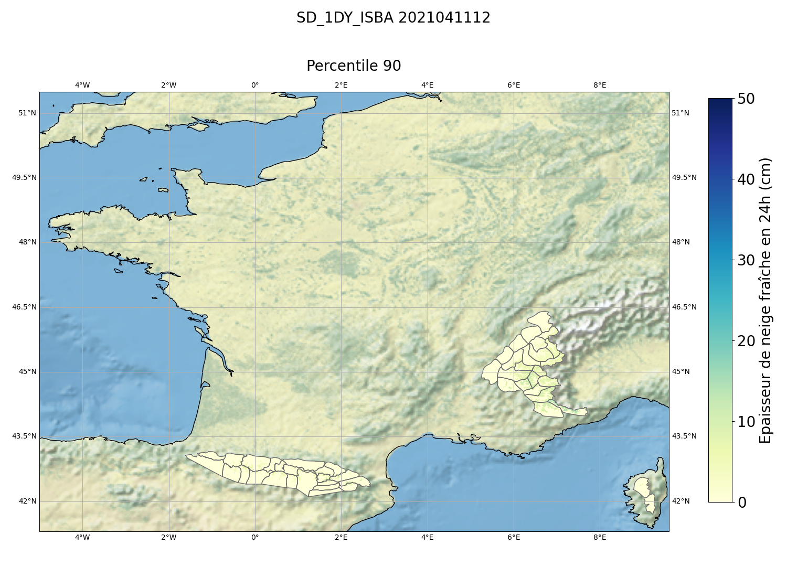
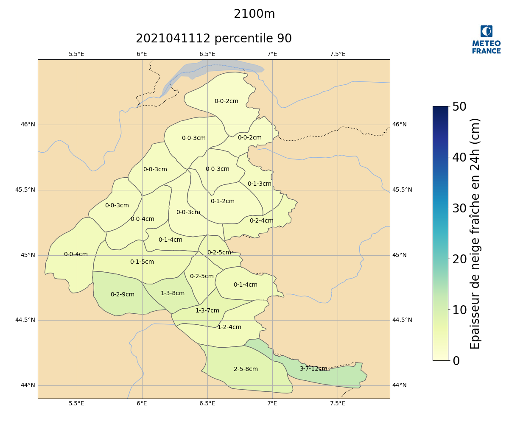
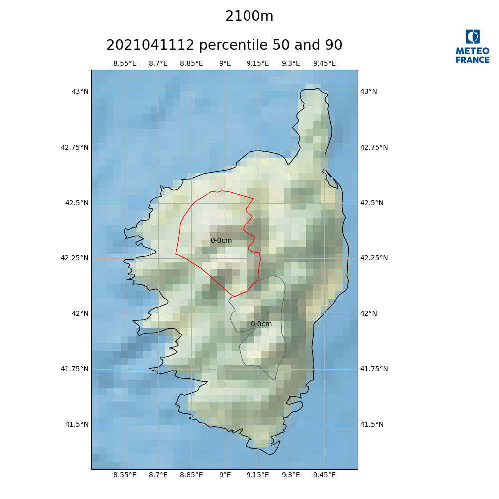
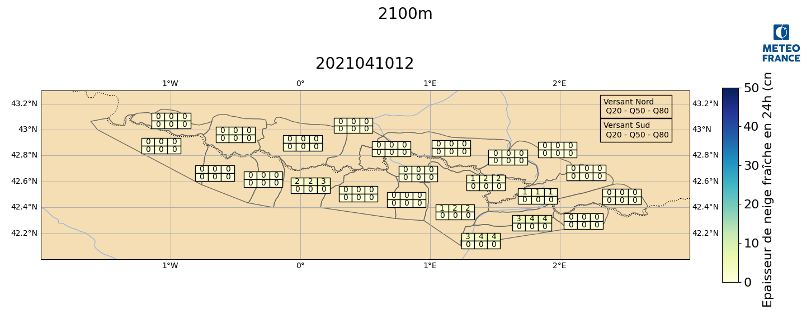
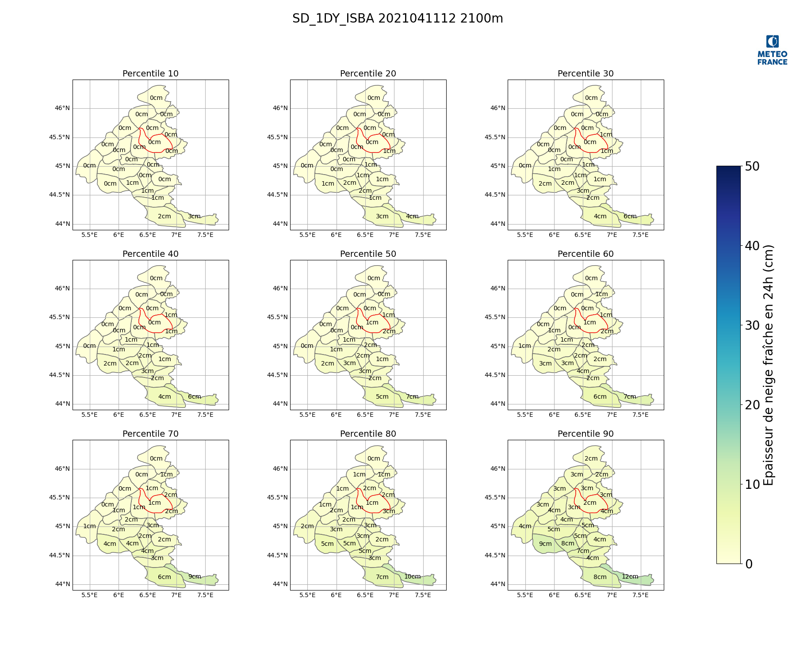
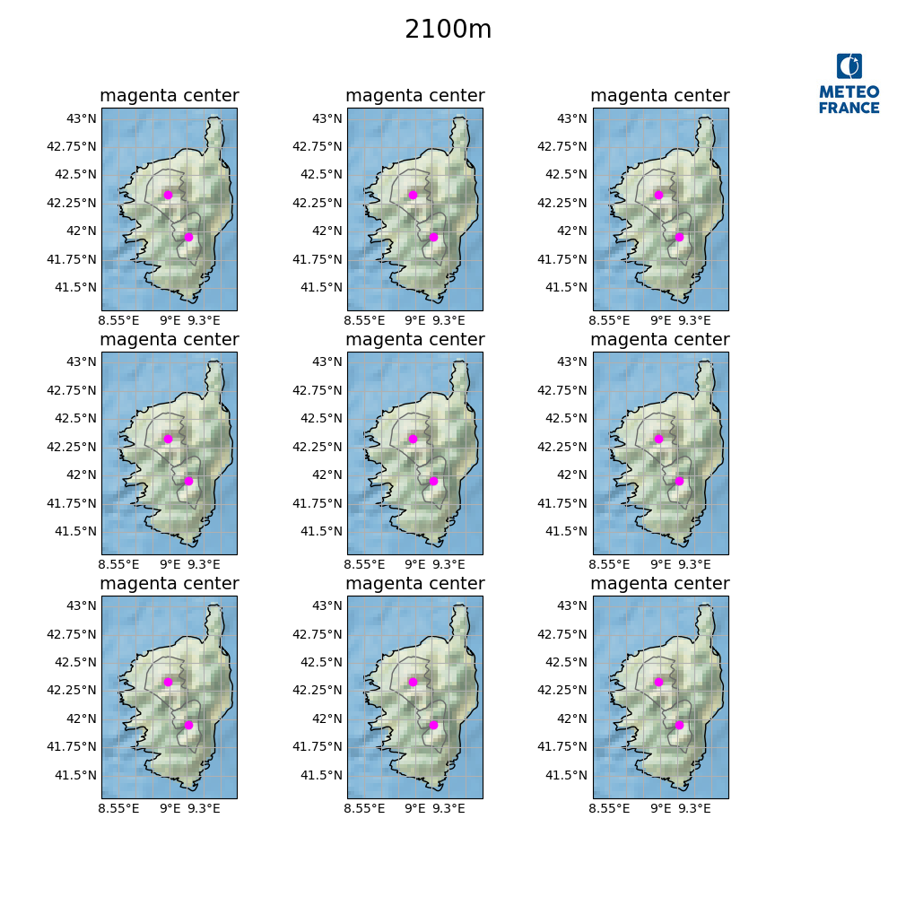
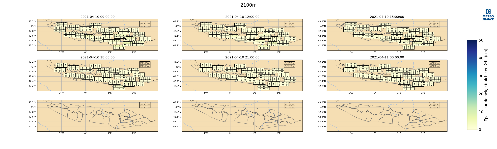
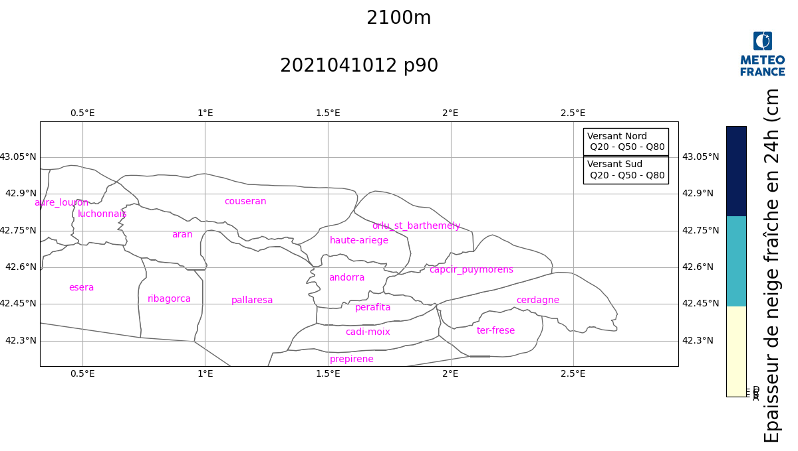

Map plotting tools for data at Massif scale¶
Created on 29 march 2021
- Authors:
radanovics
Module for map plots with massifs. Developed with matplotlib 3.4.0/3.2.1 and cartopy 0.18. Working combination: matplotlib 3.5.1 + cartopy 0.20.2 python 3.10 matplotlib 3.6.3 + cartopy 0.22.0 with deprecation warning
Usage :
example :
create a Map instance for the Alps. Map_alpes can take optional kwargs.
m = Map_alpes(kwargs)
m = Map_alpes(geofeatures=True)
with geofeatures = True, borders, rivers and lakes are drawn on
the map, the land and ocean polygons are colored.
At the first use cartopy tries to download the necessary data
on the fly and saves them.
If this doesn’t succeed for some reason (proxy or certificate
issues for example), you can manually download the
shapefiles from NaturalEarth https://www.naturalearthdata.com/ and store them
in cartopys ‘data_dir’. To see where cartopy will look for the data do :
from cartopy import config
print(config['data_dir'])
The result might be for example :
$HOME/.local/share/cartopy (I’ll abbreviate with $data_dir)
Files containing borders are then stored in
$data_dir/shapefiles/natural_earth/cultural/ and
files containing land, ocean river and lake features are stored in
$data_dir/shapefiles/natural_earth/physical/
m = MapFrance(bgimage=True)
m.init_massifs(palette='Reds')
with bgimage=True a background image from Natural Earth is added showing the relief. Can not be used if geofeatures=True.
- class plots.maps.cartopy_massifs.MapFrance(*args, **kw)[source]¶
Bases:
_Map_massifsClass to draw map over all French massifs.
Example:
import os from netCDF4 import Dataset from snowtools.plots.maps import cartopy_massifs from snowtools.DATA import TESTBASE_DIR import matplotlib.pyplot as plt with Dataset(os.path.join(TESTBASE_DIR, 'PRO/postproc/grid_postproc_2021041112.nc')) as ff: lats = ff.variables['LAT'][:] lons = ff.variables['LON'][:] snow = ff.variables['SD_1DY_ISBA'][0, :, :, 8] m = cartopy_massifs.MapFrance(geofeatures=False, bgimage=True) m.init_massifs(convert_unit=100., forcemin=0., forcemax=50., palette='YlGnBu', seuiltext=50., label=u'Epaisseur de neige fraîche en 24h (cm)', unit='cm') m.draw_mesh(lons, lats, snow,convert_unit=100., forcemin=0., forcemax=50., palette='YlGnBu', seuiltext=50., label=u'Epaisseur de neige fraîche en 24h (cm)', unit='cm') m.set_figtitle("SD_1DY_ISBA 2021041112") m.set_maptitle("Percentile 90") plt.show() m.close()

- Parameters:
args – arguments passed to superclass init
kw – keyword arguments passed to superclass init
- __init__(*args, **kw)[source]¶
- Parameters:
args – arguments passed to superclass init
kw – keyword arguments passed to superclass init
- area = ['alpes', 'pyrenees', 'corse']¶
list of areas
- deport = {2: (-10000, 0), 3: (10000, 0), 6: (20000, 0), 7: (-20000, 10000), 9: (15000, -10000), 11: (15000, -10000), 13: (15000, 0), 17: (15000, 0), 18: (-20000, -10000), 19: (0, -5000), 20: (0, -5000), 21: (0, -10000), 67: (10000, 20000), 68: (0, 5000), 69: (0, 10000), 72: (20000, 20000), 74: (25000, 0), 82: (-15000, -40000), 84: (-10000, -30000), 85: (0, -5000), 87: (-5000, -40000), 88: (25000, -5000), 89: (15000, -15000), 90: (-25000, 5000), 91: (10000, -5000)}¶
displacement of tables from the center of the massifs
- height = 11¶
figure height
- infospos = (-4.0, 51.0)¶
position of north-south info box in lambert conformal coordinates
- labelfontsize = 20¶
fontsize of colorbar label
- latmax = 51.5¶
maximum latitude of map
- latmin = 41.3¶
minimum latitude of map
- legendpos = [0.9, 0.13, 0.03, 0.7]¶
position of the colorbar on the plot
- lonmax = 9.6¶
maximum longitude of map
- lonmin = -5.0¶
minimum longitude of map
- mappos = [0.05, 0.06, 0.8, 0.8]¶
position of the map on the plot
- width = 15¶
figure width
- class plots.maps.cartopy_massifs.Map_alpes(*args, **kw)[source]¶
Bases:
_Map_massifsClass for plotting a map over the French Alps.
Example:
import os from snowtools.utils.prosimu import prosimu from snowtools.plots.maps import cartopy_massifs from snowtools.DATA import TESTBASE_DIR import matplotlib.pyplot as plt with prosimu(os.path.join(TESTBASE_DIR, 'PRO/postproc/Alp/postproc_2021041006_2021041112.nc')) as ff: points = ff.get_points(ZS=2100, aspect=-1) snow = ff.read('SD_1DY_ISBA', selectpoint=points, hasDecile=True) massifs = ff.read('massif_num', selectpoint=points) m = cartopy_massifs.Map_alpes(geofeatures=True) m.init_massifs(convert_unit=100., forcemin=0., forcemax=50., palette='YlGnBu', seuiltext=50., label=u'Epaisseur de neige fraîche en 24h (cm)', unit='cm') m.draw_massifs(massifs, snow[5, :, 8], convert_unit=100., forcemin=0., forcemax=50., palette='YlGnBu', seuiltext=50., label=u'Epaisseur de neige fraîche en 24h (cm)', unit='cm') m.plot_center_massif(massifs, snow[5, :, 0], snow[5, :, 4], snow[5, :, 8], convert_unit=100., forcemin=0., forcemax=50., palette='YlGnBu', seuiltext=50., label=u'Epaisseur de neige fraîche en 24h (cm)', unit='cm') m.addlogo() m.set_maptitle("2021041112 percentile 90") m.set_figtitle("2100m") plt.show() m.close()

- Parameters:
args – Arguments to be passed to super class
kw – Keyword arguments to be passed to super class
- __init__(*args, **kw)[source]¶
- Parameters:
args – Arguments to be passed to super class
kw – Keyword arguments to be passed to super class
- area = 'alpes'¶
area tag = ‘alpes’
- deport = {7: (0, 5000), 9: (-1000, 0), 16: (1000, 0), 19: (-2000, -2000), 21: (0, -5000)}¶
displacement dictionary for the positioning tables near the massif center without overlapping.
- height = 10¶
figure height = 10
- infospos = (7.3, 46.3)¶
position of info-box on the map in Lambert Conformal coordinates = (990000, 2160000)
- labelfontsize = 20¶
fontsize of colorbar label
- latmax = 46.5¶
northen map border = 46.5
- latmin = 43.5¶
southern map border = 43.9
- legendpos = [0.85, 0.15, 0.03, 0.6]¶
legend position on the plot = [0.85, 0.15, 0.03, 0.6]
- lonmax = 7.9¶
eastern map border = 7.9
- lonmin = 5.0¶
western map border = 5.2
- mappos = [0.02, 0.06, 0.8, 0.8]¶
map position on the plot = [0.02, 0.06, 0.8, 0.8]
- width = 12¶
figure width = 12
- class plots.maps.cartopy_massifs.Map_central(*args, **kw)[source]¶
Bases:
_Map_massifsClass for plotting a map over the Massif Central.
- Parameters:
args – Arguments to be passed to super class
kw – Keyword arguments to be passed to super class
- __init__(*args, **kw)[source]¶
- Parameters:
args – Arguments to be passed to super class
kw – Keyword arguments to be passed to super class
- area = 'central'¶
area tag = ‘central’
- deport = {}¶
displacement dictionary for the positioning tables near the massif center without overlapping.
- height = 10¶
figure height = 10
- infospos = (4.3, 46.1)¶
position of info-box on the map in Lambert Conformal coordinates = (990000, 2160000)
- labelfontsize = 20¶
fontsize of colorbar label
- latmax = 46.3¶
northen map border = 46.3
- latmin = 43.3¶
southern map border = 43.3
- legendpos = [0.85, 0.15, 0.03, 0.6]¶
legend position on the plot = [0.85, 0.15, 0.03, 0.6]
- lonmax = 4.8¶
eastern map border = 4.8
- lonmin = 1.6¶
western map border = 1.6
- mappos = [0.02, 0.06, 0.8, 0.8]¶
map position on the plot = [0.02, 0.06, 0.8, 0.8]
- width = 12¶
figure width = 12
- class plots.maps.cartopy_massifs.Map_corse(*args, **kw)[source]¶
Bases:
_Map_massifsClass for plotting a map over Corse.
Example:
import os from snowtools.utils.prosimu import prosimu from snowtools.plots.maps import cartopy_massifs from snowtools.DATA import TESTBASE_DIR import matplotlib.pyplot as plt with prosimu(os.path.join(TESTBASE_DIR, 'PRO/postproc/Cor/postproc_2021041006_2021041112.nc')) as ff: points = ff.get_points(ZS=2100, aspect=-1) snow = ff.read('SD_1DY_ISBA', selectpoint=points, hasDecile=True) massifs = ff.read('massif_num', selectpoint=points) m = cartopy_massifs.Map_corse(bgimage=True) m.init_massifs(convert_unit=100., forcemin=0., forcemax=50., palette='YlGnBu', seuiltext=50., label=u'Epaisseur de neige fraîche en 24h (cm)', unit='cm') m.highlight_massif(massifs[0], convert_unit=100., forcemin=0., forcemax=50., palette='YlGnBu', seuiltext=50., label=u'Epaisseur de neige fraîche en 24h (cm)', unit='cm') m.plot_center_massif(massifs, snow[5, :, 4], snow[5, :, 8], convert_unit=100., forcemin=0., forcemax=50., palette='YlGnBu', seuiltext=50., label=u'Epaisseur de neige fraîche en 24h (cm)', unit='cm') m.addlogo() m.set_maptitle("2021041112 percentile 50 and 90") m.set_figtitle("2100m") plt.show() m.close()

- Parameters:
args – args passed to super class
kw – keyword args passed to super class
- __init__(*args, **kw)[source]¶
- Parameters:
args – args passed to super class
kw – keyword args passed to super class
- area = 'corse'¶
area tag = ‘corse’
- deport = {}¶
displacement dictionary for the positioning tables near the massif center without overlapping. = {}
- height = 10¶
figure height = 10
- infospos = (8.5, 43.0)¶
info box position on the map in Lambert Conformal Coordinates
- labelfontsize = 20¶
fontsize of colorbar label
- latmax = 43.1¶
northern map border = 43.1
- latmin = 41.3¶
southern map border = 41.3
- legendpos = [0.81, 0.15, 0.03, 0.6]¶
legend position on the figure = [0.81, 0.15, 0.03, 0.6]
- lonmax = 9.6¶
eastern map border = 9.6
- lonmin = 8.4¶
western map border = 8.4
- mappos = [0.05, 0.06, 0.8, 0.8]¶
map position on the figure = [0.05, 0.06, 0.8, 0.8]
- width = 10¶
figure width = 10
- class plots.maps.cartopy_massifs.Map_jura(*args, **kw)[source]¶
Bases:
_Map_massifsClass for plotting a map over the French Jura.
- Parameters:
args – Arguments to be passed to super class
kw – Keyword arguments to be passed to super class
- __init__(*args, **kw)[source]¶
- Parameters:
args – Arguments to be passed to super class
kw – Keyword arguments to be passed to super class
- area = 'jura'¶
area tag = ‘jura’
- deport = {}¶
displacement dictionary for the positioning tables near the massif center without overlapping.
- height = 10¶
figure height = 10
- infospos = (5.4, 47.35)¶
position of info-box on the map in Lambert Conformal coordinates = (990000, 2160000)
- labelfontsize = 20¶
fontsize of colorbar label
- latmax = 47.5¶
northen map border = 46.5
- latmin = 45.6¶
southern map border = 43.9
- legendpos = [0.85, 0.15, 0.03, 0.6]¶
legend position on the plot = [0.85, 0.15, 0.03, 0.6]
- lonmax = 7.15¶
eastern map border = 7.9
- lonmin = 5.3¶
western map border = 5.2
- mappos = [0.02, 0.06, 0.8, 0.8]¶
map position on the plot = [0.02, 0.06, 0.8, 0.8]
- width = 12¶
figure width = 12
- class plots.maps.cartopy_massifs.Map_pyrenees(*args, **kw)[source]¶
Bases:
_Map_massifsClass to plot a map of the Pyrenees.
Example:
import os from snowtools.utils.prosimu import prosimu from snowtools.plots.maps import cartopy_massifs from snowtools.DATA import TESTBASE_DIR import matplotlib.pyplot as plt with prosimu(os.path.join(TESTBASE_DIR, 'PRO/postproc/Pyr/postproc_2021041006_2021041112.nc')) as ff: points_nord = ff.get_points(aspect=0, ZS=2100, slope=40) points_sud = ff.get_points(aspect=180, ZS=2100, slope=40) snow_nord = ff.read('SD_1DY_ISBA', selectpoint=points_nord, hasDecile=True) snow_sud = ff.read('SD_1DY_ISBA', selectpoint=points_sud, hasDecile=True) massifs = ff.read('massif_num', selectpoint=points_nord) m = cartopy_massifs.Map_pyrenees(geofeatures=True) m.init_massifs(convert_unit=100., forcemin=0., forcemax=50., palette='YlGnBu', seuiltext=50., label=u'Epaisseur de neige fraîche en 24h (cm)', unit='cm') m.add_north_south_info() m.rectangle_massif(massifs, [snow_sud[1, :, 1], snow_sud[1, :, 4], snow_sud[1, :, 7], snow_nord[1, :, 1], snow_nord[1, :, 4], snow_nord[1, :, 7]], ncol=2, convert_unit=100., forcemin=0., forcemax=50., palette='YlGnBu', seuiltext=50., label=u'Epaisseur de neige fraîche en 24h (cm)', unit='cm') m.addlogo() m.set_maptitle("2021041012") m.set_figtitle("2100m") plt.show() m.close()

- Parameters:
args – args passed to super class
kw – keyword args passed to super class
- __init__(*args, **kw)[source]¶
- Parameters:
args – args passed to super class
kw – keyword args passed to super class
- area = 'pyrenees'¶
area tag = ‘pyrenees’
- deport = {64: (0, 2000), 67: (0, 20000), 68: (10000, 5000), 70: (-2000, 10000), 71: (-12000, 5000), 72: (10000, 10000), 73: (10000, 10000), 74: (10000, 3000), 75: (5000, 0), 81: (-10000, 1000), 82: (-3000, 0), 83: (1000, 0), 84: (-4000, 0), 85: (0, -7000), 86: (-3000, 0), 87: (0, -10000), 88: (12000, 7000), 89: (0, -4000), 90: (10000, -5000), 91: (-17000, -8000)}¶
displacement dictionary for the positioning tables near the massif center without overlapping.
- height = 5.8¶
figure height = 5.8
- infospos = (-1.8, 42.4)¶
info box position on the map in Lambert Conformal Coordinates
- labelfontsize = 16¶
fontsize of colorbar label
- latmax = 43.3¶
northern map border = 43.3
- latmin = 42.0¶
southern map border = 42.0
- legendpos = [0.89, 0.13, 0.02, 0.6]¶
legend position on the figure = [0.89, 0.1, 0.03, 0.7]
- lonmax = 3.0¶
eastern map border = 3.0
- lonmin = -2.0¶
western map border = -2.0
- mappos = [0.05, 0.06, 0.8, 0.8]¶
map position on the figure = [0.05, 0.06, 0.8, 0.8]
- width = 14.5¶
figure width = 14.5
- class plots.maps.cartopy_massifs.Map_vosges(*args, **kw)[source]¶
Bases:
_Map_massifsClass for plotting a map over the Vosges.
- Parameters:
args – Arguments to be passed to super class
kw – Keyword arguments to be passed to super class
- __init__(*args, **kw)[source]¶
- Parameters:
args – Arguments to be passed to super class
kw – Keyword arguments to be passed to super class
- area = 'vosges'¶
area tag = ‘vosges’
- deport = {}¶
displacement dictionary for the positioning tables near the massif center without overlapping.
- height = 10¶
figure height = 10
- infospos = (6.6, 48.6)¶
position of info-box on the map in Lambert Conformal coordinates = (990000, 2160000)
- labelfontsize = 20¶
fontsize of colorbar label
- latmax = 48.7¶
northen map border = 46.5
- latmin = 47.65¶
southern map border = 43.9
- legendpos = [0.85, 0.15, 0.03, 0.6]¶
legend position on the plot = [0.85, 0.15, 0.03, 0.6]
- lonmax = 7.45¶
eastern map border = 7.9
- lonmin = 6.55¶
western map border = 5.2
- mappos = [0.02, 0.06, 0.8, 0.8]¶
map position on the plot = [0.02, 0.06, 0.8, 0.8]
- massif_numbers = [45, 46, 47]¶
Massif numbers
- width = 12¶
figure width = 12
- class plots.maps.cartopy_massifs.MultiMap_Alps(*args, nrow=1, ncol=1, width=18, height=15, **kw)[source]¶
Bases:
Map_alpes,_MultiMapClass for plotting multiple massif plots of the French Alps
Example:
import os from snowtools.utils.prosimu import prosimu from snowtools.plots.maps import cartopy_massifs from snowtools.DATA import TESTBASE_DIR import matplotlib.pyplot as plt with prosimu(os.path.join(TESTBASE_DIR, 'PRO/postproc/Alp/postproc_2021041006_2021041112.nc')) as ff: points = ff.get_points(ZS=2100, aspect=-1) snow = ff.read('SD_1DY_ISBA', selectpoint=points, hasDecile=True) massifs = ff.read('massif_num', selectpoint=points) lo = cartopy_massifs.MultiMap_Alps(nrow=3, ncol=3, geofeatures=False) lo.init_massifs(convert_unit=100., forcemin=0., forcemax=50., palette='YlGnBu', seuiltext=50., label=u'Epaisseur de neige fraîche en 24h (cm)', unit='cm') lo.draw_massifs(massifs, snow[5, :, :], axis=1, convert_unit=100., forcemin=0., forcemax=50., palette='YlGnBu', seuiltext=50., label=u'Epaisseur de neige fraîche en 24h (cm)', unit='cm') lo.highlight_massif(10, convert_unit=100., forcemin=0., forcemax=50., palette='YlGnBu', seuiltext=50., label=u'Epaisseur de neige fraîche en 24h (cm)', unit='cm') lo.set_figtitle("SD_1DY_ISBA 2021041112 2100m") titles = ['Percentile {0}'.format(i) for i in range(10, 100, 10)] lo.set_maptitle(titles) lo.plot_center_massif(massifs, snow[5,:,:], axis=1,convert_unit=100., forcemin=0., forcemax=50., palette='YlGnBu', seuiltext=50., label=u'Epaisseur de neige fraîche en 24h (cm)', unit='cm') lo.addlogo() plt.show() lo.close()

- Parameters:
nrow – number of rows of plots
ncol – number of columns of plots
args – arguments passed to superclass init and
init_maps()kw – keyword arguments passed to superclass init and
init_maps()
- __init__(*args, nrow=1, ncol=1, width=18, height=15, **kw)[source]¶
- Parameters:
nrow – number of rows of plots
ncol – number of columns of plots
args – arguments passed to superclass init and
init_maps()kw – keyword arguments passed to superclass init and
init_maps()
- legendpos = [0.9, 0.15, 0.03, 0.6]¶
legend position on the plot = [0.85, 0.15, 0.03, 0.6]
- class plots.maps.cartopy_massifs.MultiMap_Cor(*args, nrow=1, ncol=1, width=10, height=10, **kw)[source]¶
Bases:
_MultiMap,Map_corseClass for plotting multiple massif plots of Corse
Example:
import os from snowtools.utils.prosimu import prosimu from snowtools.plots.maps import cartopy_massifs from snowtools.DATA import TESTBASE_DIR import matplotlib.pyplot as plt with prosimu(os.path.join(TESTBASE_DIR, 'PRO/postproc/Cor/postproc_2021041006_2021041112.nc')) as ff: points = ff.get_points(ZS=2100, aspect=-1) snow = ff.read('SD_1DY_ISBA', selectpoint=points, hasDecile=True) massifs = ff.read('massif_num', selectpoint=points) m = cartopy_masssifs.MultiMap_Cor(nrow=3, ncol=3, bgimage=True) m.init_massifs(convert_unit=100., forcemin=0., forcemax=50., palette='YlGnBu', seuiltext=50., label=u'Epaisseur de neige fraîche en 24h (cm)', unit='cm') centre = [shape.centroid.coords[0] for shape in m.llshape] m.addpoints(*list(zip(*centre)), color='magenta', marker="o") m.addlogo() m.set_maptitle(["magenta center"]) m.set_figtitle("2100m") plt.show() m.close()

- Parameters:
nrow – number of rows of maps
ncol – number of columns of maps
args – arguments passed to super class init and
init_maps()kw – keyword arguments passed to super class init and
init_maps()
- class plots.maps.cartopy_massifs.MultiMap_Pyr(*args, nrow=1, ncol=1, width=30, height=9, **kw)[source]¶
Bases:
Map_pyrenees,_MultiMapClass for plotting multiple massif plots of the Pyrenees
Example:
import os from snowtools.utils.prosimu import prosimu from snowtools.plots.maps import cartopy_massifs from snowtools.DATA import TESTBASE_DIR import matplotlib.pyplot as plt with prosimu(os.path.join(TESTBASE_DIR, 'PRO/postproc/Pyr/postproc_2021041006_2021041112.nc')) as ff: points_nord = ff.get_points(aspect=0, ZS=2100, slope=40) points_sud = ff.get_points(aspect=180, ZS=2100, slope=40) snow_nord = ff.read('SD_1DY_ISBA', selectpoint=points_nord, hasDecile=True) snow_sud = ff.read('SD_1DY_ISBA', selectpoint=points_sud, hasDecile=True) massifs = ff.read('massif_num', selectpoint=points_nord) m = cartopy_massifs.MultiMap_Pyr(nrow=3, ncol=3, geofeatures=True) m.init_massifs(convert_unit=100., forcemin=0., forcemax=50., palette='YlGnBu', seuiltext=50., label=u'Epaisseur de neige fraîche en 24h (cm)', unit='cm') m.add_north_south_info() titles = ff.readtime() m.set_maptitle(titles) m.rectangle_massif(massifs, [snow_sud[:, :, 1], snow_sud[:, :, 4], snow_sud[:, :, 7], snow_nord[:, :, 1], snow_nord[:, :, 4], snow_nord[:, :, 7]], ncol=2, convert_unit=100., forcemin=0., forcemax=50., palette='YlGnBu', seuiltext=50., label=u'Epaisseur de neige fraîche en 24h (cm)', unit='cm', axis=0) m.addlogo() m.set_figtitle("2100m") plt.show() m.close()

- Parameters:
nrow – number of rows of maps
ncol – number of columns of maps
args – arguments passed to super class init and
init_maps()kw – keyword arguments passed to super class init and
init_maps()
- __init__(*args, nrow=1, ncol=1, width=30, height=9, **kw)[source]¶
- Parameters:
nrow – number of rows of maps
ncol – number of columns of maps
args – arguments passed to super class init and
init_maps()kw – keyword arguments passed to super class init and
init_maps()
- legendpos = [0.94, 0.13, 0.02, 0.6]¶
legend position on the figure = [0.89, 0.1, 0.03, 0.7]
- mappos = [0.05, 0.06, 0.95, 0.8]¶
map position on the figure = [0.05, 0.06, 0.85, 0.8]
- class plots.maps.cartopy_massifs.MultiMap_Vos(*args, nrow=1, ncol=1, width=18, height=15, **kw)[source]¶
Bases:
Map_vosges,_MultiMapclass for plotting multiple massif plots for the Vosges.
- Parameters:
nrow – number of rows of plots
ncol – number of columns of plots
args – arguments passed to superclass init and
init_maps()kw – keyword arguments passed to superclass init and
init_maps()
- __init__(*args, nrow=1, ncol=1, width=18, height=15, **kw)[source]¶
- Parameters:
nrow – number of rows of plots
ncol – number of columns of plots
args – arguments passed to superclass init and
init_maps()kw – keyword arguments passed to superclass init and
init_maps()
- legendpos = [0.9, 0.15, 0.03, 0.6]¶
legend position on the plot = [0.85, 0.15, 0.03, 0.6]
- class plots.maps.cartopy_massifs.MyCRS(projdict, globe)[source]¶
Bases:
CRSdummy class in order to be able to create an ccrs.CRS instance from a proj4/fiona.crs dictionary If the ‘proj’ is ‘lcc’ in projdict, an LambertConformal projection is initialized.
- class plots.maps.cartopy_massifs.Zoom_massif(num_massif)[source]¶
Bases:
_Map_massifsClass for zoomed map on a given massif
Example:
import os from snowtools.utils.prosimu import prosimu from snowtools.plots.maps import cartopy_massifs from snowtools.DATA import TESTBASE_DIR import matplotlib.pyplot as plt with prosimu(os.path.join(TESTBASE_DIR, 'PRO/postproc/Pyr/postproc_2021041006_2021041112.nc')) as ff: points_nord = ff.get_points(aspect=0, ZS=2100, slope=40) snow_nord = ff.read('SD_1DY_ISBA', selectpoint=points_nord, hasDecile=True) massifs = ff.read('massif_num', selectpoint=points_nord) m = cartopy_massifs.Zoom_massif(70) m.init_massifs(palette='YlGnBu', seuiltext=50., ticks=['A', 'B', 'C', 'D'], label=u'Epaisseur de neige fraîche en 24h (cm)', unit='cm', ncolors=3) m.draw_massifs(massifs, snow_nord[1, :, 8], palette='YlGnBu', seuiltext=50., label=u'Epaisseur de neige fraîche en 24h (cm)', unit='cm', ncolors=3, ticks=['A', 'B', 'C', 'D']) m.empty_massifs(convert_unit=100., forcemin=0., forcemax=50., palette='YlGnBu', seuiltext=50., label=u'Epaisseur de neige fraîche en 24h (cm)', unit='cm') m.add_north_south_info() centre = [shape.centroid.coords[0] for shape in m.llshape] m.addpoints(*list(zip(*centre)), color='magenta', labels=m.name) m.addlogo() m.set_maptitle("2021041012 p90") m.set_figtitle("2100m") plt.show() m.close()

Init zoom class
- Parameters:
num_massif – massif number
- get_map_dimensions(num_massif)[source]¶
get map dimension enclosing the given massif numbers.
- Parameters:
num_massif – massif numbers
- Returns:
lonmin, lonmax, latmin, latmax
- labelfontsize = 20¶
fontsize of colorbar label
- plots.maps.cartopy_massifs.convertunit(*args, **kwargs)[source]¶
convert units vor all variables in
args- Parameters:
args – variables to be scaled
kwargs – ‘convert_unit’: scaling factor to be used
- Returns:
list of converted variables
- plots.maps.cartopy_massifs.getLonLatMassif()[source]¶
get center coordinates of the Massifs
- Returns:
dict with key = Massif Number, value = (lon, lat)
- plots.maps.cartopy_massifs.getTextColor(var, **kwargs)[source]¶
determine text color given the value of the variable to plot.
- Parameters:
var – value of the variable
kwargs – ‘seuiltext’: threshold above which text color should be white.
- Returns:
color, default is ‘black’
- Return type:
str